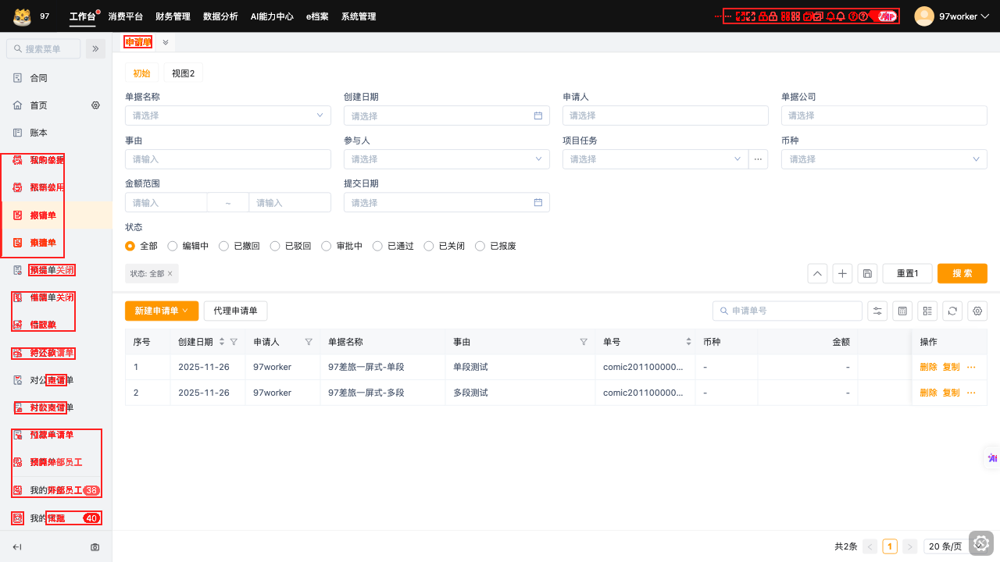
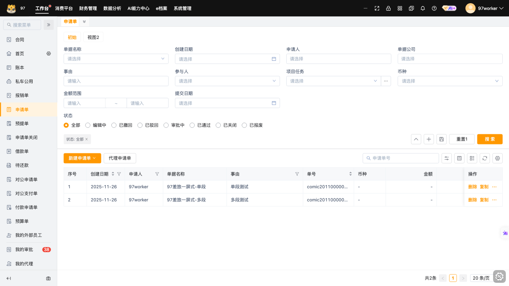
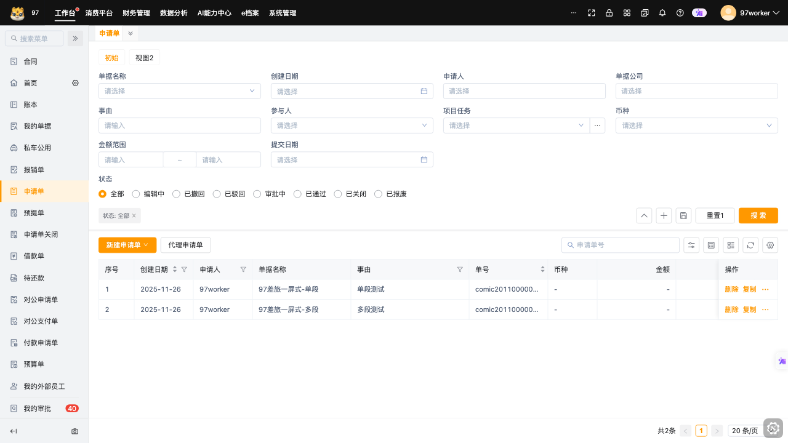
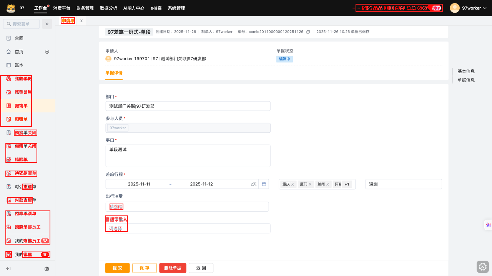
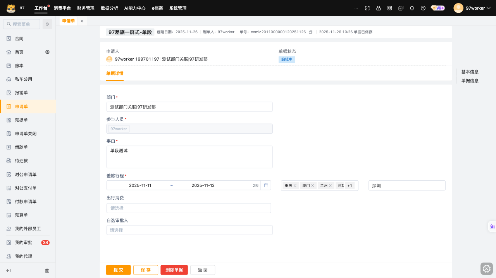
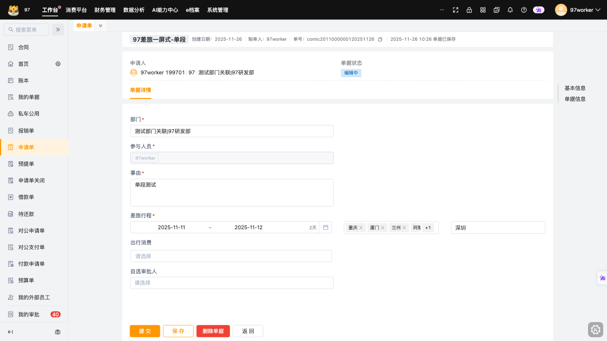

内部样例 · dev / 申请单 / 账号 A · 2026-10-15 10:00（北京时间）
发现页面变化，需确认是否符合预期
先看导航菜单，再看顶部图标。目前未人工确认缺陷，不能据此决定发布。
01 · 菜单项变了，后续条目位置随之变化
当前增加了“申请单关闭”，底部不再显示“我的代理”。请确认是否为预期的菜单或权限调整。


红色像素表示变化，红框圈出变化区域；不代表已确认缺陷。点击图片查看原尺寸。




局部放大：菜单与顶部图标（可收起）
以上为同一区域放大；位置变化本身不等于错位缺陷。底部计数变化不作为本项缺陷依据。
02 · 顶部右侧图标有变化
需要确认：菜单和图标调整是否在本次版本或权限变更范围内？符合预期则审核更新基线；不符合则登记问题。
查看整页：拖动对比线
蓝线左边显示基线，右边显示当前。也可分别打开原尺寸图片。
基线 09-03当前 10-15
打开基线图 · 打开当前图
筛选区可见，但自动检查未识别
当前截图能看到“单据名称、事由、状态”等筛选字段。自动检查没有找到对应元素，尚不能判断页面缺失。
下一步：工具维护者核对定位规则和截图状态；暂不要求前端修改页面。
检查依据
截图元数据：request-filter-panel.exists=false。检查使用可选选择器 .advanced-table-search-form, .advanced-search-filter-pop。此信号不能独立证明视觉缺陷，需核对实际组件。
详情首屏：红色标出变化位置
本样例尚未给出详情缺陷判断；只展示首屏，不包含向下滚动后的内容。


红色表示变化，不等于缺陷；点击图片查看原尺寸。




拖动对比前后页面
基线 09-03当前 10-15
打开基线图 · 打开当前图
检查范围与限制
| 页面状态 | 结果 |
|---|---|
| 列表 / 筛选展开态 | 有截图；本样例将公共导航变化合并展示，未完成整页验收。 |
| 搜索结果态 | 截图中查询框为空、仍显示两行；不能据此验收搜索结果态。 |
| 详情 | 有首屏对照图，等待复核。 |
| 新建、保存、修改、删除及其他视口 | 未覆盖。 |
批次、来源与技术说明
- Chrome，1280 × 720。批次：
2026-10-15T02-00-01-626Z，运行进度为 done，不等于视觉验收通过。 - 基线 revision 2，源批次
2026-09-03T09-01-49-476Z，元数据标记手动晋升。当前 / 基线的产品版本、账号权限角色及审批记录未知。 - 变化位置由助手查看真实截图整理，尚未经测试 / 前端确认，未调用新的视觉模型。
- 不同产物的差异数值口径尚未对齐，不作为严重程度或发布依据。
- 完整来源、信息契约与试读表。这是静态样例，不保存复核结论。